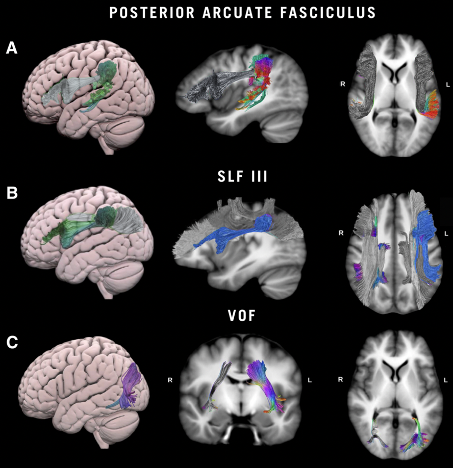
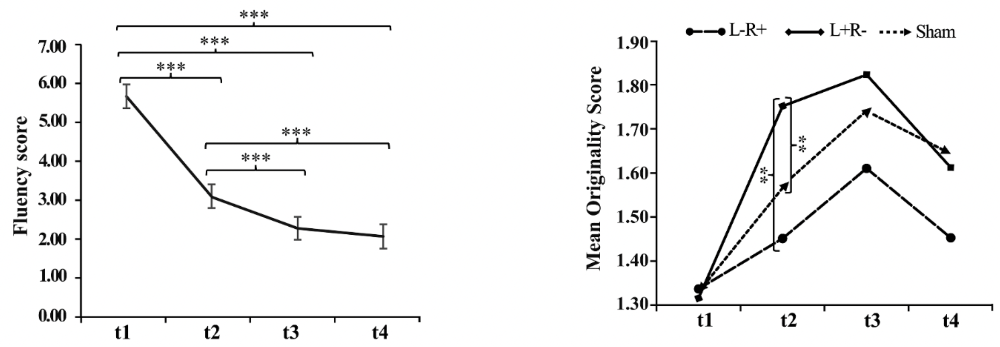
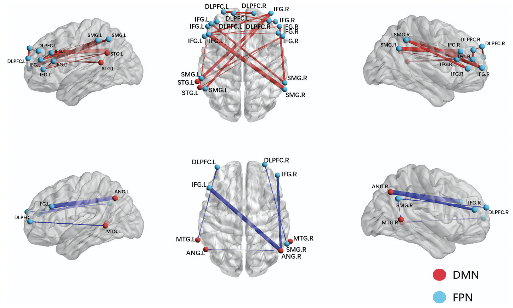
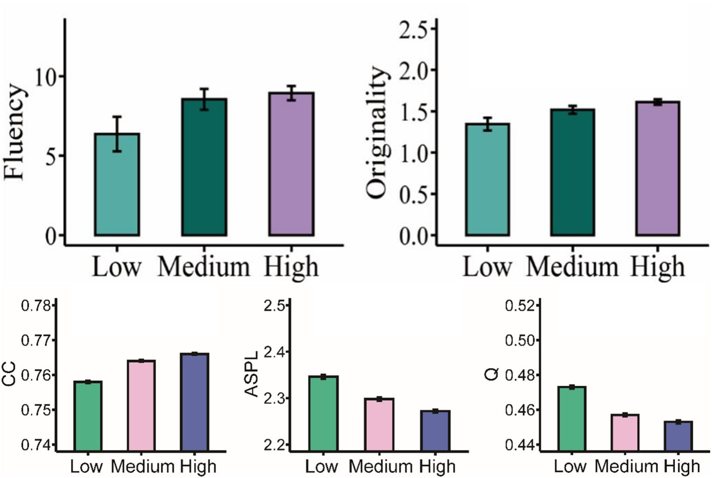
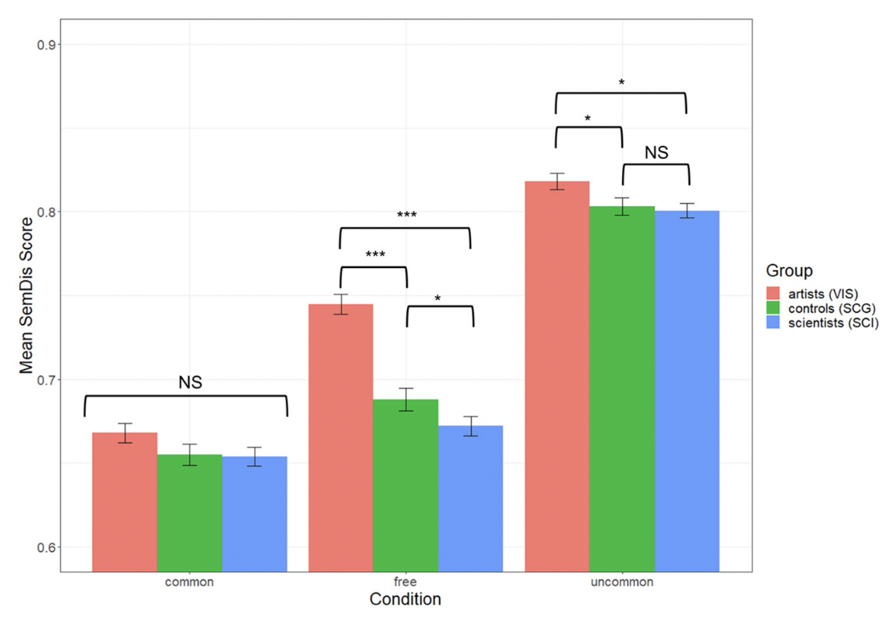
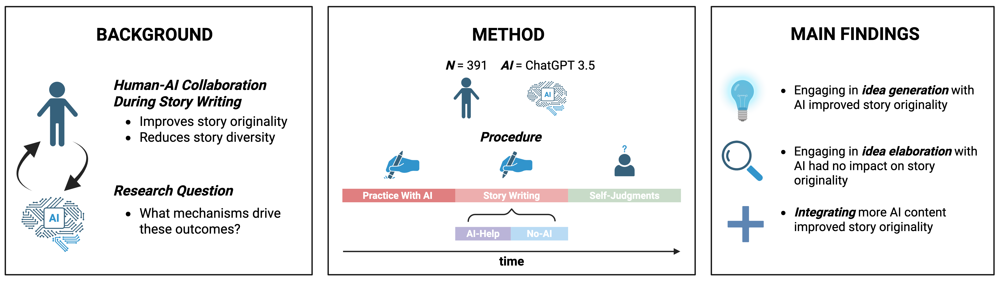
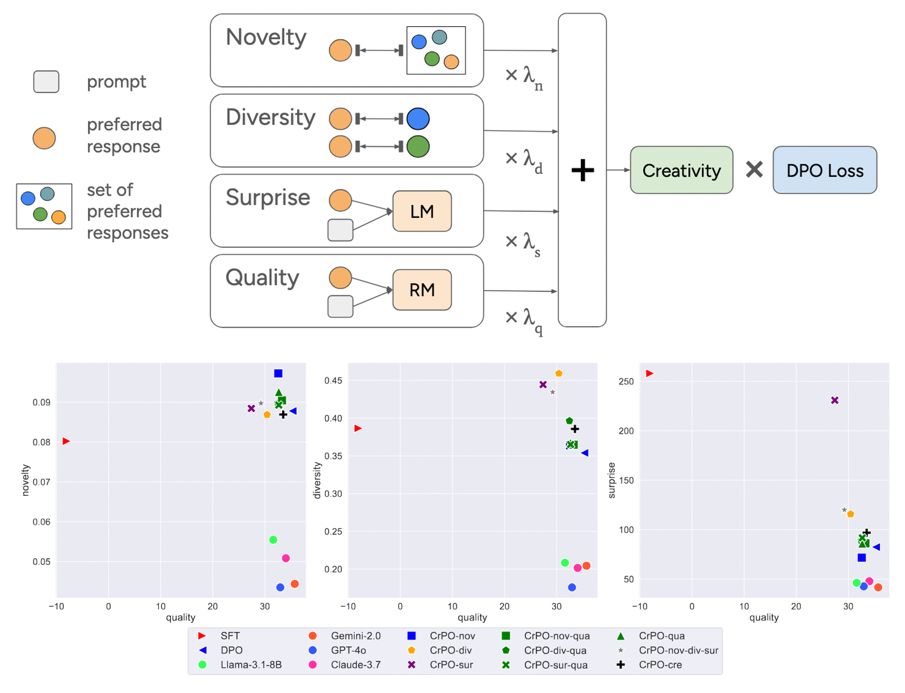
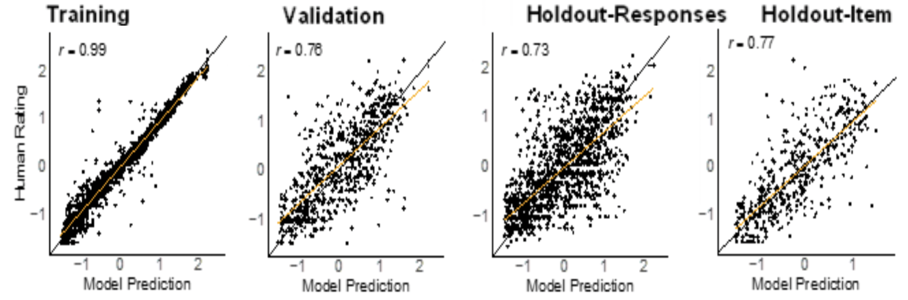
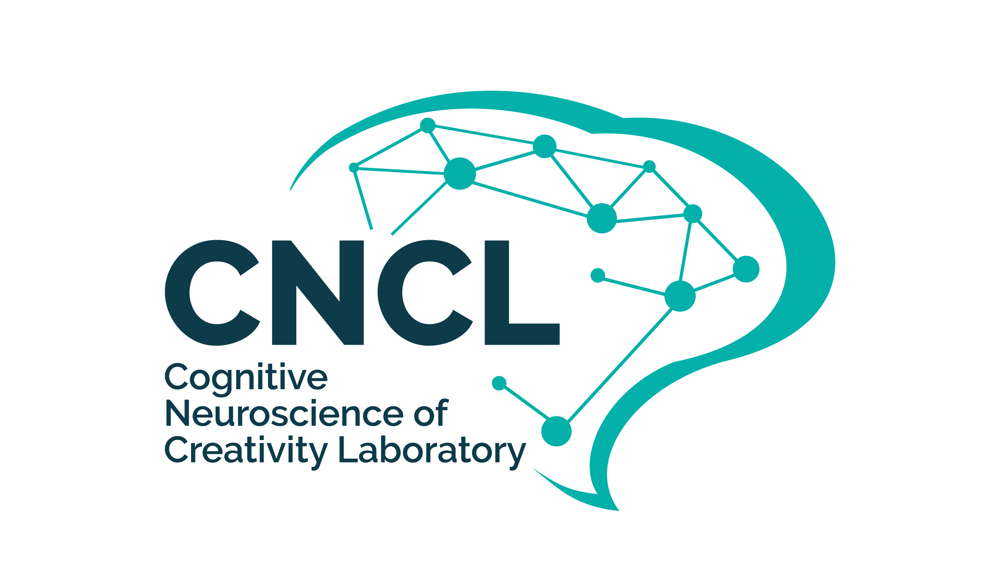

Simone Luchini
PhD Student
Hi, I am Simone! I study creativity in humans and artificial systems. My work intersects cognitive psychology, neuroscience, and artificial intelligence. I am currently a PhD student at Penn State University, working with Dr. Roger Beaty. I completed my BSc at The University of Westminster and my MSc at The University of Milano-Bicocca. I have also been a visiting student at the labs of Dr. Emmanuelle Volle at the Paris Brain Institute, and Dr. Bodong Chen at the University of Pennsylvania.
Learn About My Research
My research fits into three related categories. (1) Understanding the neural (brain) systems that support creative thinking, leveraging neuroimaging (e.g., fMRI, fNIRS) and neuromodulation techniques (e.g., neurofeedback, tDCS, tACS). (2) Defining the cognitive systems that underlie creativity, employing network science, factor analytic techniques, longitudinal analyses, and more. (3) Exploring how representations and creative behaviors of humans compare to those of AI (primarily Large Language Models), to develop artificial systems capable of human-like creativity. You can read about some selected projects from these lines of research below:
Creativity Neuroscience
This line of research investigates the neural substrate of creative thinking in humans. Studies leverage a variety of neuroimaging techniques, such as fMRI and fNIRS, often in combination with neuromodulatory techniques like neurofeedback or brain stimulation. I am particularly interested in tying the neural mechanisms that support creative thinking to specific cognitive processes, to shed light on the nature of creativity.
May 2025
The White Matter of Aha! Moments

Salvi, C., Luchini, S. A., Pestilli, F., Hanekamp, S., Hope, T., Parrish, T., ... & Grafman, J. (2025). The White Matter of Aha! Moments. Research Square.
Individuals can solve creative problems via step-by-step (analytical) thinking or through insight ("Aha!" moments). Studies have identified widespread functional brain activity involved in insight problem-solving, yet, the white matter substrate of insight remains unexplored. In this study, we employed DTI to investigate how white matter microstructure relates to insight versus step-by-step analytical reasoning. After controlling for age and gender, insight was found to be linked to lower FA in the left posterior Arcuate Fasciculus and bilateral Superior Longitudinal Fasciculi III. Conversely, step-by-step reasoning was linked to higher FA in the left Vertical Occipital Fasciculus and higher FA in the anterior corpus callosum. This work exposes distinct structural connectivity patterns associated with different modes of creative problem-solving, contributing to our understanding of the neural architecture supporting creative cognition.
Read more
Read more
April 2025
Enhancing Creativity with Covert Neurofeedback: Causal Evidence for Default-Executive Network Coupling in Creative Thinking

Luchini, S. A., Zhang, X., White, R. T., Lührs, M., Ramot, M., & Beaty, R. E. (2025). Enhancing creativity with covert neurofeedback: causal evidence for default-executive network coupling in creative thinking. Cerebral Cortex, 35(4), bhaf065.
Correlational evidence has linked creativity to coupling between the Default Mode Network (DMN) and Executive Control Network (ECN). In this study, we leveraged covert neurofeedback to endogenously modify functional connectivity between DMN and ECN without the participants' knowledge. We compared this to a control neurofeedback condition, entraining coupling between medial prefrontal cortex and supplementary motor area. Approximately 24 hours after neurofeedback, DMN-ECN neurofeedback led to increased coupling between these networks during a creative thinking task (generating creative object uses), extending to broader DMN regions. Behaviorally, we observed a double dissociation: the DMN-ECN neurofeedback increased idea originality, while the control neurofeedback improved go/no-go reaction times. We thus provide the first evidence that DMN-ECN coupling causally enhances creative performance.
Read more
Read more
April 2023
Accelerating Creativity: Effects of Transcranial Direct Current Stimulation on the Temporal Dynamics of Divergent Thinking

Li, Y., Beaty, R. E., Luchini, S., Dai, D. Y., Xiang, S., Qi, S., ... & Hu, W. (2023). Accelerating creativity: effects of transcranial direct current stimulation on the temporal dynamics of divergent thinking. Creativity Research Journal, 35(2), 169-188.
tDCS over the DLPFC enhances creative thinking, but the temporal dynamics and underlying cognitive mechanisms remain unclear. We investigated how this tDCS affects convergent and divergent thinking, focusing on the serial order effect (ideas becoming more original over time) and the role of cognitive inhibition. In a within-subjects design, participants received three types of cross-hemispheric tDCS (left cathodal/right anodal, L-R+; left anodal/right cathodal, L+R-; and sham) over the DLPFC. They completed flanker tasks measuring cognitive inhibition, plus the AUT measuring divergent thinking and RAT measuring convergent thinking. Results showed that L+R- stimulation significantly enhanced originality in the AUT compared to sham, with no effect on the RAT. The L+R- condition also showed a diminished serial order effect, with accelerated production of original ideas, and was accompanied by better flanker task performance. These findings suggest that L+R- tDCS over the DLPFC accelerates idea originality, with cognitive inhibition potentially mediating the enhancement in divergent thinking.
Read more
Read more
August 2022
Automated creativity prediction using natural language processing and resting-state functional connectivity: an fNIRS study

Xie, C., Luchini, S., Beaty, R. E., Du, Y., Liu, C., & Li, Y. (2022). Automated creativity prediction using natural language processing and resting-state functional connectivity: an fNIRS study. Creativity Research Journal, 34(4), 401-418.
Creative thinking relies on large-scale brain connectivity. Specifically, functional coupling of the DMN and ECN has been linked to creative performance. In this study, we show for the first time that brain signals captured with fNIRS can be used to predict creative performance measured via an automated computational method. We also find that dynamic resting-state functional connectivity is twice as effective at predicting creative performance, as opposed to static resting-state functional connectivity. We extend past work in the network neuroscience of creativity by showing that stable predictions of objective creative performance can be derived from dynamic fNIRS signals.
Read more
Read more
Creative Cognition
This line of research investigates the cognitive underpinnings of creative thinking in humans. Studies leverage a variety of methodologies, such as network science, factor analytic techniques, and longitudinal studies. I am particularly interested in uncovering the role of associative memory processes on creativity, as well as tying apart the influences of spontaneous and goal-directed influences on creativity.
May 2024
Mapping the Memory Structure of High-Knowledge Students: A Longitudinal Semantic Network Analysis

Luchini, S. A., Wang, S., Kenett, Y. N., & Beaty, R. E. (2024). Mapping the memory structure of high-knowledge students: A longitudinal semantic network analysis. Journal of Intelligence, 12(6), 56.
Code and data available here.
Code and data available here.
In this paper we explored the relationship between semantic network and learning across two studies in undergraduate students enrolled in an introductory psychology course. We administered a cumulative multiple-choice test of psychology knowledge and estimated semantic networks across two domains: domain-specific (psychology) and domain-general (animals). Based on performance on the psychology test, we categorized students into a high-knowledge or low-knowledge group and compared their semantic networks. We found that the high-knowledge group had semantic networks that were more clustered, with shorter distances between concepts compared to the low-knowledge group. We also found the semantic networks of high-knowledge students became more interconnected over time. Successful learners show a distinct semantic network—characterized by high connectivity and short path distances between concepts—both domain-general and domain-specific, highlighting the utility of cognitive network science for studying variation in student learning.
Read more
Read more
April 2024
The role of semantic memory networks in crystallized intelligence and creative thinking ability

Li, Y., Beaty, R. E., Luchini, S., Hu, W., & Kenett, Y. N. (2024). The role of semantic memory networks in crystallized intelligence and creative thinking ability. Learning and Individual Differences, 111, 102426.
Crystallized intelligence has been found to support creativity. Yet, the mechanisms that link crystallized intelligence to creativity remain poorly understood. Across two studies, we demonstrate that crystallized intelligence is linked to creative ability as well as semantic memory network structure. We found similar semantic memory network structures that support creativity also underlie high crystallized intelligence. Our findings suggest that flexible access to semantic memory supports both verbal intelligence and creativity.
Read more
Read more
June 2023
Convergent thinking and insight problem solving relate to semantic memory network structure

Luchini, S., Kenett, Y. N., Zeitlen, D. C., Christensen, A. P., Ellis, D. M., Brewer, G. A., & Beaty, R. E. (2023). Convergent thinking and insight problem solving relate to semantic memory network structure. Thinking Skills and Creativity, 48, 101277.
Code and data available here.
Code and data available here.
The associative theory of creativity holds that creative thinking involves connecting remote concepts in semantic memory, yet, research has overlooked its applicability to convergent thinking and insight. Convergent thinking problems can be solved with insight (the sudden "aha" experience) or analysis (deliberately and incrementally working towards the solution). In this work, we used network science to compare semantic network structure across two grouping variables: 1) convergent thinking ability (i.e., problem accuracy), and 2) the tendency to solve problems with insight or analysis. Our findings show that convergent thinking ability is linked to flexible and interconnected semantic networks—with short paths and many connections between concepts. Moreover, participants who primarily solved problems with insight showed shorter average path distances between concepts, even after controlling for accuracy. Our results extend the literature on semantic memory and creativity by linking the organization of semantic memory to convergent thinking and insight.
Read more
Read more
April 2023
Free Association Ability Distinguishes Highly Creative Artists From Scientists: Findings From the Big-C Project

Merseal, H. M., Luchini, S., Kenett, Y. N., Knudsen, K., Bilder, R. M., & Beaty, R. E. (2025). Free association ability distinguishes highly creative artists from scientists: Findings from the Big-C Project. Psychology of Aesthetics, Creativity, and the Arts, 19(3), 495–504.
People's ability to connect remote associations allows them to form creative ideas. Past creativity research has almost exclusively focused on the general population, with far less work examining eminently-creative individuals across the arts and sciences. We analyzed data from the Big-C Project—a sample of world-renowned visual artists and scientists, and an intelligence-matched comparison group—and tested whether the ability to generate remote word associations differs as a function of creative expertise. We found an interaction between domain expertise and association condition: while artists generated more distant associations overall, this was particularly true for free associations (generating the first word that comes to mind). Visual artists spontaneously produced more remote associations but their creative expertise was less relevant for producing associations involving goal-directed cognitive search.
Read more
Read more
Creativity and AI
This line of research investigates the similarity and differences between creative behavior in humans and AI, as well as the outcomes of human-AI collaboration. Studies focus on modern AI systems, such as large language models and large multimodal models. I am particularly interested in exploring how creative idea generation and evaluation in AI compares to that of humans, developing AI with stronger creative abilities, and studying the mechanisms underlying human-AI co-creativity.
May 2025
The Roles of Idea Generation and Elaboration in Human-AI Collaborative Creativity

Luchini, S. A., Pronchick, J., Ceh, S. M., Kaufman, J. C., Johnson, D. R., Rafner, J., & Beaty, R. (2025). The Roles of Idea Generation and Elaboration in Human-AI Collaborative Creativity. PsyArXiv.
Data available here.
Data available here.
In this work, we explore how humans and AI can collaborate effectively in creative tasks. We investigate the distinct roles of idea generation and elaboration in human-AI collaborative creativity, examining how these processes interact and contribute to creative outcomes. Our findings reveal that while AI excels at generating diverse ideas, human creativity shines in the elaboration and refinement of these ideas. We demonstrate that the most successful creative outcomes emerge when humans and AI work together, leveraging their complementary strengths. This research provides insights into optimizing human-AI collaboration for creative tasks and suggests new directions for developing AI systems that better support human creativity.
Read more
Read more
May 2025
Creative Preference Optimization

Ismayilzada, M., Laverghetta Jr, A., Luchini, S. A., Patel, R., Bosselut, A., van der Plas, L., & Beaty, R. (2025). Creative Preference Optimization. arXiv preprint arXiv:2505.14442.
While LLMs have shown impressive performance on many natural language tasks they still struggle with creativity. Past attempts at enhancing LLM creativity have narrowly focused on improving their outputs' diversity on very specific tasks. In our work, we introduce Creative Preference Optimization, an alignment method that injects signals from multiple creativity dimensions (novelty, quality, diversity, and surprise) to guide the LLMs output. We compiled a large dataset of 200k+ human responses to creativity tasks, rated on their creativity by trained human judges. We used this large dataset to train a model, which was found to outperform several baselines including GPT-4o on creativity tests. Our findings show that creative preference optimization is a promising direction for boosting LLM creativity without compromising output quality.
Read more
Read more
March 2025
Automated scoring of creativity in multilingual narratives

Luchini, S. A., Moosa, I. M., Patterson, J. D., Johnson, D., Baas, M., Barbot, B., ... & Beaty, R. E. (2025). Automated assessment of creativity in multilingual narratives. Psychology of Aesthetics, Creativity, and the Arts.
Code and data available here.
Code and data available here.
LLMs have shown remarkable success on creativity tasks, yet they have not been applied to scoring multilingual creativity data or narratives. In this work, our goal was to develop an LLM that could score the originality of narratives across 11 different languages. We fine-tuned RoBERTa-base on multilingual stories translated into English, and found it strongly predicted human originality ratings (r ≥ .73). We also fine-tuned XLM-RoBERTa on the same stories, in their original language, and found that it also reliably predicted human originality scores (r ≥ .72). We thus demonstrated that LLMs can successfully score narrative creativity in 11 different languages, surpassing the performance of the best previous automated scoring techniques (e.g., semantic distance). This work represents the first effective, accessible, and reliable solution for the automated scoring of creativity in multilingual narratives.
Read more
Read more
March 2025
Automated scoring of creative problem solving with large language models: A comparison of originality and quality ratings

Luchini, S. A., Maliakkal, N. T., DiStefano, P. V., Laverghetta Jr, A., Patterson, J. D., Beaty, R. E., & Reiter-Palmon, R. (2025). Automated scoring of creative problem solving with large language models: A comparison of originality and quality ratings. Psychology of Aesthetics, Creativity, and the Arts.
Code and data available here.
Code and data available here.
Creative problem solving is a naturalistic form of creative thinking involving the generation of solutions that are not only original but also of high quality (i.e., plausible and effective). We examine whether both originality and quality can be automatically scored for a naturalistic creativity task, by two open-source LLMs. We gathered data from 10 studies, amounting to 3,243 participants who completed different items of the creative problem-solving task. We fine-tuned two LLMs, RoBERTa and GPT-2, and few-shot prompted two separate LLMs, Claude and Llama, to predict human ratings of originality and quality on the CPST. We found that RoBERTa and GPT-2 models predict human ratings of solution quality (RoBERTa, r = .83; GPT-2, r = .83) better than solution originality (RoBERTa, r = .79; GPT-2, r = .80). Few-shot prompting was less effective than fine-tuning at predicting both originality (r = .66–.11) and quality (r = .62–.26). We show for the first time that naturalistic creativity tasks can be automatically scored for both originality and quality.
Read more
Read more
February 2024
Bridging the measurement gap: A large language model method of assessing open-ended question complexity

Raz, T., Luchini, S., Beaty, R., & Kenett, Y. (2024). Bridging the measurement gap: A large language model method of assessing open-ended question complexity. In Proceedings of the Annual Meeting of the Cognitive Science Society (Vol. 46).
Model available here.
Model available here.
Question-asking, an essential yet often understudied activity, holds significant implications for fields such as learning, creativity, and cognitive development. Question complexity has been found to be a crucial factor affecting question quality level. However, assessing the complexity of questions, and especially open-ended questions, remains a methodological challenge. In this study, we develop a computational model that automatically scores the complexity of open-ended questions. Our results reveal that our LLM-generated Bloom scores correlated strongly with human ratings of complexity (r = .73), whilst also greatly exceeding baseline methods tested. The research emphasizes the significance of LLM in automating the assessment of open-ended question complexity, fostering cost-effective, automatic, and reliable measurements in this domain.
Read more
Read more
